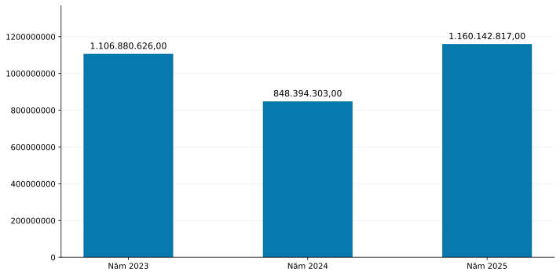
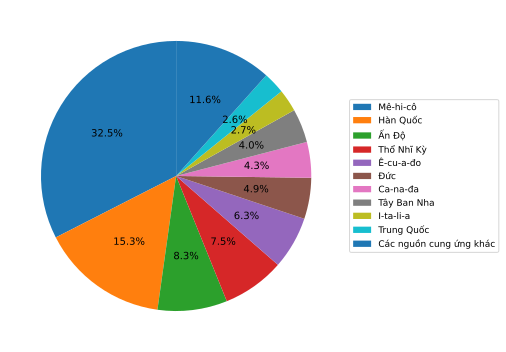
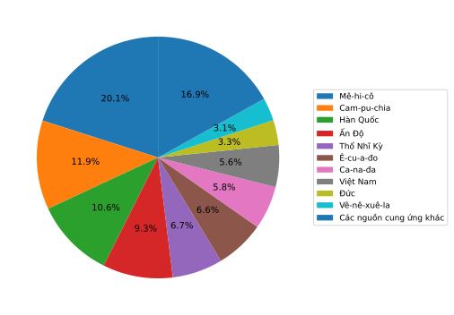
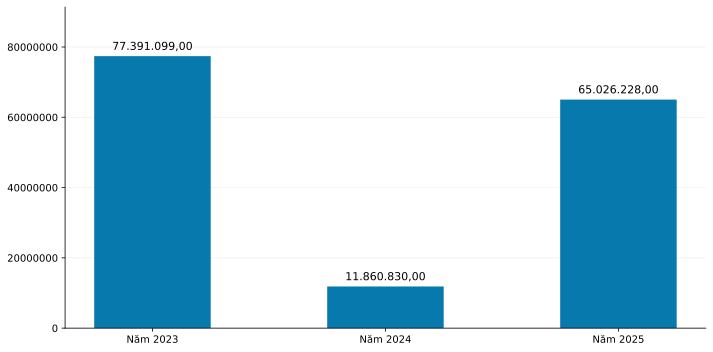
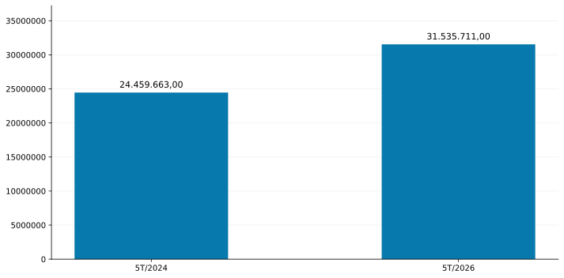

Thổ Nhĩ Kỳ khởi xướng rà soát cuối kỳ biện pháp chống bán phá giá đối với ống thép hàn không gỉ của Việt Nam
Ngày 03/7/2026, Bộ Thương mại Thổ Nhĩ Kỳ ban hành Thông báo số 2026/27 về việc khởi xướng rà soát cuối kỳ biện pháp chống bán phá giá đang áp dụng đối với một số sản phẩm ống thép hàn không gỉ có xuất xứ từ Việt Nam.
Sản phẩm thuộc diện rà soát là ống thép hàn không gỉ, được phân loại theo các mã GTIP 7306.40.20.90.00; 7306.40.80.90.00 và 7306.61.10.00.00 (các mã hàng chỉ mang tính tham khảo, phạm vi sản phẩm được xác định theo mô tả của cơ quan điều tra).
Vụ việc được khởi xướng trên cơ sở đề nghị của Marcegaglia TR Paslanmaz Çelik Sanayi ve Ticaret A.Ş., cùng sự ủng hộ của sáu doanh nghiệp sản xuất ống thép không gỉ tại Thổ Nhĩ Kỳ. Hiện nay, sản phẩm này đang chịu thuế chống bán phá giá từ 19,64% đến 25% giá CIF, theo Thông báo số 2021/38 có hiệu lực từ ngày 10/7/2021.
Theo Bộ Thương mại Thổ Nhĩ Kỳ, hồ sơ của ngành sản xuất trong nước đã cung cấp đủ thông tin, tài liệu và chứng cứ cho thấy việc chấm dứt biện pháp hiện hành có thể dẫn đến khả năng tiếp diễn hoặc tái diễn hành vi bán phá giá và thiệt hại đối với ngành sản xuất trong nước. Vì vậy, cơ quan này quyết định tiến hành rà soát cuối kỳ theo quy định của pháp luật Thổ Nhĩ Kỳ. Trong suốt quá trình rà soát, biện pháp chống bán phá giá hiện hành vẫn tiếp tục được duy trì cho đến khi có kết luận cuối cùng.
Cơ quan điều tra sẽ gửi bản câu hỏi tới các nhà sản xuất, xuất khẩu, nhà nhập khẩu và các bên liên quan. Thời hạn trả lời bản câu hỏi là 37 ngày kể từ ngày nhận được thông báo hoặc kể từ ngày công bố quyết định khởi xướng đối với các bên không nhận được thông báo trực tiếp. Các tài liệu, ý kiến và bản trả lời phải được nộp bằng phương thức điện tử theo hướng dẫn của cơ quan điều tra. Trường hợp doanh nghiệp không hợp tác, hợp tác không đầy đủ hoặc cung cấp thông tin không đúng thời hạn, cơ quan điều tra có thể sử dụng dữ liệu sẵn có bất lợi để đưa ra kết luận, dẫn đến mức thuế chống bán phá giá cao hơn.
Để bảo vệ quyền và lợi ích hợp pháp, Cục Phòng vệ thương mại khuyến nghị các doanh nghiệp sản xuất, xuất khẩu sản phẩm liên quan rà soát hoạt động xuất khẩu sang thị trường Thổ Nhĩ Kỳ, chủ động chuẩn bị đầy đủ hồ sơ, dữ liệu theo yêu cầu của cơ quan điều tra và tích cực hợp tác trong suốt quá trình rà soát. Doanh nghiệp cũng cần phối hợp chặt chẽ với Cục Phòng vệ thương mại để kịp thời cập nhật diễn biến vụ việc và xử lý các vấn đề phát sinh.
TIN TRONG NƯỚC
Canada tổ chức tham vấn công khai về cơ chế quản lý hạn ngạch thuế quan đối với một số sản phẩm thép nhập khẩu
Bộ Các vấn đề toàn cầu Canada (Global Affairs Canada) đang tổ chức tham vấn công khai về cơ chế quản lý hạn ngạch thuế quan (Tariff-Rate Quota - TRQ) đối với một số sản phẩm thép nhập khẩu thuộc Mục 82 của Danh mục Kiểm soát nhập khẩu (Import Control List - ICL). Đợt tham vấn nhằm lấy ý kiến các bên liên quan về phương thức quản lý hạn ngạch trong thời gian tới, đặc biệt là khả năng áp dụng cơ chế phân bổ hạn ngạch đối với một số nhóm sản phẩm.
Trước đó, từ ngày 27/6/2025, Chính phủ Canada đã áp dụng biện pháp hạn ngạch thuế quan đối với một số sản phẩm thép nhập khẩu và đã nhiều lần điều chỉnh vào các ngày 01/8/2025, 26/12/2025 và 28/6/2026. Theo phía Canada, việc rà soát định kỳ nhằm đánh giá hiệu quả của biện pháp, đồng thời xem xét hoàn thiện cơ chế quản lý để phù hợp với tình hình thị trường.
Biện pháp hạn ngạch hiện được thực hiện theo Lệnh áp thuế bổ sung đối với việc nhập khẩu một số sản phẩm thép (SOR/2025-148), các quy định hướng dẫn tại Thông báo số 1163 dành cho nhà nhập khẩu và được quản lý theo Đạo luật Giấy phép xuất khẩu và nhập khẩu (Export and Import Permits Act - EIPA).
Đợt tham vấn diễn ra từ ngày 23/7/2026 đến hết ngày 19/8/2026. Mọi tổ chức, cá nhân quan tâm, bao gồm doanh nghiệp sản xuất, xuất khẩu, nhập khẩu, hiệp hội ngành hàng, cơ sở nghiên cứu, tổ chức xã hội, cơ quan quản lý và các đối tác thương mại quốc tế đều có thể tham gia đóng góp ý kiến. Các ý kiến được gửi thông qua bảng hỏi trực tuyến hoặc liên hệ với Bộ Các vấn đề toàn cầu Canada qua thư điện tử theo hướng dẫn của cơ quan này.
Để bảo vệ quyền và lợi ích hợp pháp, Cục Phòng vệ thương mại khuyến nghị các hiệp hội ngành hàng và doanh nghiệp sản xuất, xuất khẩu thép của Việt Nam rà soát hoạt động xuất khẩu các sản phẩm thuộc phạm vi áp dụng hạn ngạch thuế quan sang thị trường Canada, nghiên cứu kỹ nội dung tham vấn cũng như các quy định liên quan để đánh giá tác động đối với hoạt động kinh doanh.
Bên cạnh đó, các doanh nghiệp nên chủ động tham gia quá trình tham vấn trước thời hạn ngày 19/8/2026, theo dõi sát các diễn biến của vụ việc và tăng cường phối hợp với Cục Phòng vệ thương mại nhằm kịp thời trao đổi thông tin, đề xuất hỗ trợ và có phương án ứng phó phù hợp nếu cơ chế quản lý hạn ngạch của Canada được điều chỉnh trong thời gian tới.
TIN TRONG NƯỚC
Bộ Công Thương khởi xướng điều tra chống bán phá giá đối với một số sản phẩm thanh thép dự ứng lực nhập khẩu từ Trung Quốc
Ngày 27/7/2026, Bộ Công Thương ban hành Quyết định số 1903/QĐ-BCT về việc khởi xướng điều tra áp dụng biện pháp chống bán phá giá đối với một số sản phẩm thanh thép dự ứng lực có xuất xứ từ Trung Quốc (mã vụ việc: AD24).
Sản phẩm bị điều tra được phân loại theo các mã HS 7227.20.00; 7228.20.11; 7228.20.19 và 7229.20.00 (mã HS chỉ mang tính tham khảo, phạm vi hàng hóa được xác định theo mô tả trong Quyết định điều tra).
Quyết định khởi xướng điều tra được ban hành trên cơ sở kết quả thẩm định hồ sơ yêu cầu điều tra theo quy định của pháp luật về phòng vệ thương mại. Hồ sơ do Công ty TNHH MTV Thép dự ứng lực Hòa Phát và Công ty Cổ phần Thép dự ứng lực Việt Nhật, đại diện cho ngành sản xuất trong nước, nộp. Theo hồ sơ, các doanh nghiệp cho rằng sản phẩm thanh thép dự ứng lực có xuất xứ từ Trung Quốc đã và đang được bán phá giá vào thị trường Việt Nam, gây thiệt hại đáng kể cho ngành sản xuất trong nước.
Theo quy định tại Nghị định số 86/2025/NĐ-CP, sau khi khởi xướng điều tra, Bộ Công Thương sẽ gửi bản câu hỏi chọn mẫu tới các nhà sản xuất, xuất khẩu nước ngoài và đại diện của nước, vùng lãnh thổ có hàng hóa bị điều tra mà Cơ quan điều tra biết. Trường hợp số lượng doanh nghiệp hoặc chủng loại hàng hóa quá lớn, Cơ quan điều tra có thể áp dụng phương pháp chọn mẫu để giới hạn phạm vi điều tra. Các doanh nghiệp không trả lời bản câu hỏi đúng thời hạn sẽ bị coi là không hợp tác trong vụ việc.
Trên cơ sở kết quả chọn mẫu, Cơ quan điều tra sẽ gửi bản câu hỏi điều tra chính thức nhằm thu thập thông tin phục vụ việc xác định hành vi bán phá giá, đánh giá thiệt hại của ngành sản xuất trong nước và xem xét mối quan hệ nhân quả giữa hàng hóa bị điều tra và thiệt hại bị cáo buộc. Trong trường hợp cần thiết, Bộ Công Thương có thể áp dụng biện pháp chống bán phá giá tạm thời trên cơ sở kết luận điều tra sơ bộ theo quy định của pháp luật.
Trong quá trình điều tra, Cơ quan điều tra sẽ tiến hành thẩm tra, xác minh các thông tin do các bên liên quan cung cấp, đồng thời tổ chức tham vấn công khai để các bên trình bày quan điểm và cung cấp thêm thông tin trước khi ban hành kết luận cuối cùng.
Để bảo đảm quyền và lợi ích hợp pháp, Cục Phòng vệ thương mại khuyến nghị các tổ chức, cá nhân có hoạt động sản xuất, xuất khẩu, nhập khẩu, phân phối, kinh doanh hoặc sử dụng sản phẩm thuộc phạm vi điều tra đăng ký tham gia vụ việc với tư cách bên liên quan, đồng thời tích cực hợp tác và cung cấp đầy đủ thông tin theo yêu cầu của Cơ quan điều tra trong suốt quá trình xử lý vụ việc.
TIN TRONG NƯỚC
Bộ Công Thương ban hành Quyết định rà soát lần thứ nhất việc áp dụng biện pháp chống bán phá giá đối với một số sản phẩm thép cán nóng có xuất xứ từ Trung Quốc
Ngày 27/7/2026, Bộ Công Thương ban hành Quyết định số 1902/QĐ-BCT về việc rà soát lần thứ nhất áp dụng biện pháp chống bán phá giá đối với một số sản phẩm thép cán nóng có xuất xứ từ Trung Quốc (mã vụ việc: AR01.AD20).
Trước đó, ngày 04/7/2025, Bộ Công Thương đã ban hành Quyết định số 1959/QĐ-BCT áp dụng thuế chống bán phá giá chính thức đối với một số sản phẩm thép cán nóng có xuất xứ từ Trung Quốc, đồng thời chấm dứt điều tra áp dụng biện pháp chống bán phá giá đối với sản phẩm cùng loại có xuất xứ từ Ấn Độ.
Theo quy định tại khoản 1 Điều 51 Nghị định số 86/2025/NĐ-CP, trong bốn năm đầu kể từ ngày quyết định áp dụng biện pháp chống bán phá giá chính thức có hiệu lực, các bên liên quan có quyền đề nghị rà soát hằng năm việc áp dụng biện pháp. Trên cơ sở hồ sơ yêu cầu rà soát do một doanh nghiệp sản xuất của Trung Quốc nộp và sau khi xem xét tính đầy đủ, hợp lệ của hồ sơ theo quy định của pháp luật, Bộ Công Thương đã quyết định tiến hành rà soát lần thứ nhất đối với vụ việc.
Để bảo đảm quyền và lợi ích hợp pháp của các tổ chức, cá nhân liên quan, Cục Phòng vệ thương mại đề nghị các bên có liên quan đăng ký tham gia vụ việc theo mẫu Đơn đăng ký bên liên quan và gửi đến Cơ quan điều tra thông qua Hệ thống tiếp nhận hồ sơ phòng vệ thương mại trực tuyến (TRAV ONLINE) tại địa chỉ https://online.trav.gov.vn. Đơn đăng ký cũng có thể được gửi qua đường bưu điện hoặc thư điện tử theo hướng dẫn của Cơ quan điều tra. Thời hạn đăng ký bên liên quan chậm nhất là ngày 21/10/2026.
Các tổ chức, cá nhân tham gia vụ việc cần chủ động hợp tác, cung cấp đầy đủ thông tin theo yêu cầu của Cơ quan điều tra để bảo đảm quyền và lợi ích hợp pháp của mình trong quá trình rà soát.
TIN NƯỚC NGOÀI
EU áp dụng thuế chống bán phá giá tạm thời đối với sản phẩm natri benzoat nhập khẩu từ Trung Quốc
Ngày 28/7/2026, Liên minh châu Âu (EU) thông báo áp dụng thuế chống bán phá giá tạm thời đối với sản phẩm natri benzoat nhập khẩu từ Trung Quốc. Natri benzoat ở dạng hạt hoặc bột là chất bảo quản thực phẩm có đặc tính kháng khuẩn và độ hòa tan cao trong nước, ngoài lĩnh vực thực phẩm, sản phẩm này cũng được sử dụng trong một số chế phẩm dược phẩm. Biện pháp được áp dụng sau cuộc điều tra được khởi xướng trên cơ sở đơn kiện của Tập đoàn hóa chất Lanxess (Đức).
Theo thông báo đăng trên Công báo chính thức của EU, biện pháp có hiệu lực từ ngày 29/7/2026 với các mức thuế chống bán phá giá tạm thời như sau:
- Công ty Wuhan Youji Industries: 57,6%;
- Công ty Shandong TongTaiWeiRun Food Science Tech: 63,8%;
- Công ty Tianjin Dongda Chemical Group: 75,4%;
- Các nhà xuất khẩu khác của Trung Quốc: 116,4%
Đây là một trong những biện pháp phòng vệ thương mại mới nhất mà EU áp dụng đối với hàng hóa nhập khẩu từ Trung Quốc trong bối cảnh EU ngày càng quan ngại về tình trạng thâm hụt thương mại hàng hóa với Trung Quốc gia tăng. Cao ủy Thương mại EU Maros Sefcovic sẽ tiếp tục trao đổi với Bộ trưởng Thương mại Trung Quốc Vương Văn Đào, với kỳ vọng hai bên sẽ đạt được những kết quả cụ thể trước tháng 10/2026.
Theo kết quả điều tra sơ bộ của Ủy ban châu Âu (EC), các nhà sản xuất natri benzoat của Trung Quốc đã bán phá giá sản phẩm vào thị trường EU. Trong giai đoạn 2022–2024, lượng natri benzoat nhập khẩu từ Trung Quốc vào EU đã tăng hơn gấp đôi, trong khi thị phần của các nhà sản xuất Trung Quốc tăng từ khoảng 1/3 lên khoảng 55%. Đồng thời, giá nhập khẩu sản phẩm này liên tục giảm trong giai đoạn điều tra, gây sức ép đáng kể đối với ngành sản xuất của EU.
EC sẽ tiếp tục tiến hành điều tra để đưa ra kết luận cuối cùng trước cuối tháng 01/2027. Trên cơ sở kết luận cuối cùng, EC sẽ quyết định có áp dụng thuế chống bán phá giá chính thức đối với sản phẩm natri benzoat nhập khẩu từ Trung Quốc hay không. Nếu được áp dụng, biện pháp này thông thường sẽ có hiệu lực trong 05 năm.
Tổng hợp từ reuters.com
TIN NƯỚC NGOÀI
Ấn Độ áp dụng thuế chống bán phá giá đối với than cốc luyện kim nhập khẩu từ sáu quốc gia
Bộ Tài chính Ấn Độ đã ban hành quyết định áp dụng thuế chống bán phá giá chính thức đối với sản phẩm than cốc luyện kim (có hàm lượng tro dưới 18%) nhập khẩu từ Úc, Trung Quốc, Cô-lôm-bi-a, In-đô-nê-xi-a, Nhật Bản và Nga. Biện pháp này sẽ có hiệu lực trong thời hạn 05 năm.
Quyết định được ban hành trên cơ sở kết luận điều tra của Tổng cục Phòng vệ thương mại Ấn Độ (DGTR), theo đó xác định hàng hóa nhập khẩu từ các quốc gia nêu trên đã được bán phá giá và gây thiệt hại đáng kể cho ngành sản xuất trong nước.
Mức thuế chống bán phá giá được áp dụng như sau:
- Nhật Bản: 42,95 USD/tấn;
- In-đô-nê-xi-a: 67,50 USD/tấn;
- Ô-xtrây-li-a: 71,16 USD/tấn;
- Nga: 84,16 USD/tấn;
- Cô-lôm-bi-a: 118,55 USD/tấn;
- Trung Quốc: 128,83 USD/tấn.
Biện pháp này cũng được áp dụng đối với sản phẩm có xuất xứ từ các quốc gia nêu trên nhưng được xuất khẩu sang Ấn Độ thông qua nước thứ ba. Tuy nhiên, Chính phủ Ấn Độ quy định một số trường hợp được miễn trừ, bao gồm than cốc có hàm lượng phốt pho đặc biệt thấp sử dụng trong sản xuất hợp kim sắt và thép đặc biệt, cũng như nguyên liệu phục vụ sản xuất gang trong các lò cao quy mô nhỏ.
Theo số liệu thống kê, trong 06 tháng đầu năm 2026, lượng than cốc luyện kim nhập khẩu vào Ấn Độ đạt 2,9 triệu tấn, tăng 44% so với cùng kỳ năm trước. Sự gia tăng này chủ yếu xuất phát từ lợi thế về giá và chất lượng của than cốc nhập khẩu, đồng thời là giá than cốc nhập khẩu cạnh tranh hơn, chất lượng nguyên liệu cao và nhu cầu tiêu thụ tăng cùng với sự gia tăng sản lượng thép và gang. In-đô-nê-xi-a tiếp tục là nguồn cung lớn nhất cho thị trường Ấn Độ, với lượng xuất khẩu tăng 165%, đạt 2,1 triệu tấn.
Trong khi đó, sản lượng than cốc luyện kim trong nước của Ấn Độ chỉ tăng 6% trong nửa đầu năm 2026, đạt 26,8 triệu tấn, chưa đáp ứng được nhu cầu ngày càng tăng của ngành sản xuất thép.
Tổng hợp từ gmk.center
TIN NƯỚC NGOÀI
Nhật Bản kết luận sơ bộ chống bán phá giá đối với sản phẩm thép mạ kẽm nhập khẩu từ Hàn Quốc và Trung Quốc
Chính phủ Nhật Bản đã ban hành kết luận sơ bộ sản phẩm thép tấm và thép cuộn mạ kẽm nhúng nóng nhập khẩu từ Hàn Quốc và Trung Quốc được bán phá giá, gây thiệt hại đáng kể cho ngành sản xuất trong nước. Trên cơ sở đó, cơ quan điều tra quyết định gia hạn thời gian điều tra thêm 04 tháng, đến ngày 12/12/2026.
Vụ việc được khởi xướng vào tháng 8/2025 trên cơ sở đơn kiện của bốn doanh nghiệp sản xuất thép Nhật Bản, trong đó có Nippon Steel và Kobe Steel. Theo các doanh nghiệp này, nhu cầu thị trường suy giảm cùng với sự gia tăng của thép nhập khẩu giá rẻ đã buộc họ phải hạ giá bán sản phẩm để cạnh tranh.
Bộ Kinh tế, Thương mại và Công nghiệp Nhật Bản (METI), phối hợp với Bộ Tài chính Nhật Bản, sẽ cho phép các bên liên quan nộp thông tin, chứng cứ và ý kiến đối với kết luận sơ bộ trước khi đưa ra quyết định cuối cùng về việc có áp dụng thuế chống bán phá giá hay không.
Theo quy định của pháp luật Nhật Bản, thời hạn điều tra chống bán phá giá thông thường không quá 01 năm. Tuy nhiên, trong trường hợp cần thiết, cơ quan điều tra có thể gia hạn thời gian điều tra thêm tối đa 06 tháng. Việc gia hạn vụ việc được thực hiện theo quy định nhằm hoàn thất quá trình xem xét và đánh giá cá thông tin, chứng cứ do các bên liên quan cung cấp.
Sản phẩm thép tấm và thép cuộn mạ kẽm nhúng nóng được sử dụng rộng rãi trong sản xuất rào chắn giao thông, vật liệu xây dựng, hàng rào và linh kiện của các thiết bị gia dụng, đặc biệt là tủ lạnh. Cuộc điều tra không áp dụng đối với hàng hóa nhập khẩu từ Hồng Kông (Trung Quốc) và Ma Cao (Trung Quốc).
Trước đó, Chính phủ Nhật Bản cũng đã công bố kế hoạch áp dụng thuế chống bán phá giá đối với thép không gỉ cán nguội chứa niken nhập khẩu từ Trung Quốc và Đài Loan (Trung Quốc) sau khi cơ quan điều tra sơ bộ xác định các sản phẩm này được bán phá giá và gây thiệt hại đáng kể cho ngành sản xuất trong nước. Các biện pháp này dự kiến có thể được áp dụng ngay trong tháng 8/2026.
Tổng hợp từ gmk.center
TIN NƯỚC NGOÀI
Hoa Kỳ ban hành kết luận sơ bộ rà soát hành chính thuế chống bán phá giá đối với thép tấm cắt theo chiều dài nhập khẩu từ Pháp
Ngày 29/7/2026, Bộ Thương mại Hoa Kỳ (DOC) đã ban hành kết luận sơ bộ của đợt rà soát hành chính đối với lệnh áp dụng thuế chống bán phá giá đối với một số sản phẩm thép tấm các-bon và thép hợp kim cắt theo chiều dài (Carbon and Alloy Steel Cut-to-Length Plate – CTL Plate) nhập khẩu từ Pháp.
Theo kết luận sơ bộ, DOC xác định Dillinger France SA không bán sản phẩm vào thị trường Hoa Kỳ với mức giá thấp hơn giá trị thông thường trong giai đoạn rà soát từ ngày 01/5/2024 đến ngày 30/4/2025. Theo đó, doanh nghiệp này được xác định có biên độ phá giá bình quân gia quyền ở mức 0%.
DOC cho biết các bên liên quan có quyền gửi ý kiến bình luận hoặc phản đối đối với kết luận sơ bộ trong thời hạn quy định. Sau khi xem xét đầy đủ các ý kiến và thông tin do các bên cung cấp, Cơ quan điều tra sẽ ban hành kết luận cuối cùng của đợt rà soát.
Trong trường hợp kết quả cuối cùng vẫn xác định biên độ phá giá bằng 0 hoặc ở mức tối thiểu (de minimis), các lô hàng của Dillinger France SA thuộc giai đoạn rà soát sẽ không bị áp dụng thuế chống bán phá giá.
Theo quy định của pháp luật Hoa Kỳ, kết luận sơ bộ chưa phải là quyết định cuối cùng và có thể được điều chỉnh trên cơ sở các ý kiến, thông tin bổ sung của các bên liên quan trong quá trình rà soát.
Theo SteelRadar
TIN NƯỚC NGOÀI
Pa-ki-xtan áp dụng thuế chống bán phá giá tạm thời đối với nhựa PVC nhập khẩu từ Hoa Kỳ và In-đô-nê-xi-a
Ủy ban Thuế quan Quốc gia Pa-ki-xtan (National Tariff Commission - NTC) đã ban hành kết luận sơ bộ và quyết định áp dụng thuế chống bán phá giá (CBPG) tạm thời đối với sản phẩm nhựa Polyvinyl Chloride (PVC) Resin – Suspension Grade nhập khẩu từ Hoa Kỳ và In-đô-nê-xi-a, sau khi xác định có bằng chứng sơ bộ về hành vi bán phá giá và thiệt hại đáng kể đối với ngành sản xuất trong nước.
Vụ việc được khởi xướng ngày 17/4/2026 trên cơ sở hồ sơ yêu cầu của Engro Polymer & Chemical Limited. Sản phẩm bị điều tra thuộc mã PCT 3904.10.90, là nguyên liệu được sử dụng phổ biến trong sản xuất ống nhựa, phụ kiện đường ống, dây cáp điện, vật liệu đóng gói, màng, tấm nhựa và nhiều ứng dụng công nghiệp khác.
Theo kết luận sơ bộ, lượng nhựa PVC nhập khẩu bị bán phá giá từ Hoa Kỳ và In-đô-nê-xi-a gia tăng đã gây ra hiện tượng ép giá và kìm hãm giá bán của ngành sản xuất trong nước, dẫn đến sụt giảm thị phần, lợi nhuận và hiệu quả đầu tư của các doanh nghiệp sản xuất nội địa.
Trên cơ sở kết luận điều tra sơ bộ, NTC quyết định áp dụng thuế chống bán phá giá tạm thời trong thời hạn 4 tháng, có hiệu lực kể từ ngày công bố thông báo. Cụ thể, mức thuế được áp dụng là 37,30% đối với Westlake Vinyls Company LP và các nhà xuất khẩu khác của Hoa Kỳ, 22,28% đối với Westlake Vinyls Inc., và 17,70% đối với tất cả các nhà xuất khẩu từ In-đô-nê-xi-a.
Cơ quan điều tra cho biết các doanh nghiệp xuất khẩu của Hoa Kỳ đã hợp tác và cung cấp đầy đủ thông tin trong quá trình điều tra, qua đó được xác định mức biên độ bán phá giá riêng. Trong khi đó, các doanh nghiệp xuất khẩu của In-đô-nê-xi-a không cung cấp thông tin theo yêu cầu, vì vậy NTC xác định biên độ bán phá giá trên cơ sở các dữ liệu sẵn có theo quy định của pháp luật.
Theo quyết định của NTC, thuế chống bán phá giá tạm thời sẽ không áp dụng đối với nguyên liệu nhập khẩu để sản xuất hàng xuất khẩu hoặc các dự án viện trợ nước ngoài được miễn thuế hải quan.
NTC cũng kết luận rằng ngành sản xuất nhựa PVC của Pa-ki-xtan đã chịu thiệt hại đáng kể do lượng hàng nhập khẩu bị bán phá giá gia tăng, tác động tiêu cực đến giá bán và các chỉ tiêu tài chính của doanh nghiệp trong nước, đồng thời xác lập mối quan hệ nhân quả trực tiếp giữa hàng hóa bị bán phá giá và thiệt hại của ngành sản xuất nội địa.
Các bên liên quan có 30 ngày kể từ ngày công bố kết luận sơ bộ để gửi yêu cầu tổ chức phiên điều trần. Theo quy định, NTC sẽ ban hành kết luận cuối cùng trong vòng 180 ngày kể từ ngày công bố kết luận sơ bộ.
Theo Business Recorder
THÔNG TIN XUẤT NHẬP KHẨU
Cảnh báo đối với xuất khẩu mặt hàng dây và cáp nhôm vào thị trường Hoa Kỳ
Mô tả mặt hàng dây và cáp nhôm
Dây và cáp nhôm (Aluminum Wire and Cable) là nhóm sản phẩm dẫn điện được chế tạo chủ yếu từ nhôm nguyên chất hoặc hợp kim nhôm, có chức năng truyền tải và phân phối điện năng trong các hệ thống điện dân dụng, công nghiệp và hạ tầng năng lượng. Nhờ đặc tính khối lượng nhẹ, khả năng dẫn điện tốt, chống ăn mòn cao và giá thành cạnh tranh, dây và cáp nhôm ngày càng được sử dụng rộng rãi để thay thế hoặc kết hợp với dây dẫn bằng đồng trong nhiều lĩnh vực. So với đồng, nhôm chỉ có khoảng 61% độ dẫn điện nhưng khối lượng riêng chỉ bằng khoảng 30%, do đó khi xét trên cùng khối lượng vật liệu, nhôm có khả năng dẫn điện hiệu quả hơn và giúp giảm đáng kể chi phí xây dựng các đường dây truyền tải điện trên không. Đây là lý do dây và cáp nhôm được sử dụng phổ biến trong các dự án truyền tải điện cao áp, trung áp, lưới điện phân phối, điện năng lượng tái tạo và các công trình hạ tầng quy mô lớn.
Về cấu tạo, dây và cáp nhôm thường bao gồm một hoặc nhiều sợi nhôm được xoắn lại thành lõi dẫn điện. Tùy theo mục đích sử dụng, lõi dẫn có thể là nhôm cứng, nhôm mềm hoặc hợp kim nhôm có độ bền cơ học cao. Một số loại cáp được bọc lớp cách điện bằng PVC (Polyvinyl Chloride), XLPE (Cross-linked Polyethylene), PE (Polyethylene) hoặc các vật liệu polymer chuyên dụng nhằm bảo đảm khả năng cách điện, chống cháy, chống tia cực tím và chịu được điều kiện môi trường khắc nghiệt. Đối với các loại cáp điện ngầm hoặc cáp sử dụng trong môi trường đặc biệt, sản phẩm còn có thể được bổ sung lớp băng chống thấm nước, lớp giáp bằng thép hoặc nhôm và lớp vỏ bảo vệ bên ngoài nhằm tăng khả năng chịu lực, chống va đập cơ học và kéo dài tuổi thọ sử dụng.
Trên thị trường hiện nay, dây và cáp nhôm được phân thành nhiều chủng loại khác nhau tùy theo cấu tạo và mục đích sử dụng. Các sản phẩm phổ biến bao gồm dây nhôm trần (AAC - All Aluminium Conductor), dây nhôm lõi thép (ACSR - Aluminium Conductor Steel Reinforced), dây hợp kim nhôm (AAAC - All Aluminium Alloy Conductor), dây nhôm chịu nhiệt, dây nhôm bọc cách điện và các loại cáp điện lực lõi nhôm hạ áp, trung áp và cao áp. Trong đó, dây AAC có ưu điểm nhẹ, dẫn điện tốt và thường được sử dụng cho các đường dây ngắn hoặc khu vực có tải trọng cơ học thấp; dây ACSR được gia cường bằng lõi thép giúp tăng khả năng chịu lực kéo, thích hợp cho các tuyến đường dây truyền tải điện khoảng cách dài; dây AAAC sử dụng hợp kim nhôm nhằm cải thiện độ bền cơ học và khả năng chống ăn mòn, đặc biệt phù hợp với môi trường ven biển hoặc khu vực có điều kiện khí hậu khắc nghiệt.
Nguyên liệu chính để sản xuất dây và cáp nhôm là nhôm nguyên sinh hoặc nhôm tái chế có độ tinh khiết cao, thường đạt hàm lượng nhôm từ 99,5% trở lên đối với các sản phẩm yêu cầu dẫn điện cao. Trong nhiều trường hợp, các nguyên tố như magie, silic hoặc mangan được bổ sung với tỷ lệ thích hợp để tạo thành hợp kim nhôm nhằm nâng cao độ bền cơ học, khả năng chịu nhiệt và tuổi thọ sản phẩm mà vẫn bảo đảm các yêu cầu về dẫn điện. Chất lượng nguyên liệu đầu vào có ý nghĩa quyết định đối với các chỉ tiêu kỹ thuật của sản phẩm như điện trở suất, độ bền kéo, độ giãn dài, khả năng chống ăn mòn và độ ổn định trong quá trình vận hành.
Dây và cáp nhôm được ứng dụng rộng rãi trong nhiều lĩnh vực của nền kinh tế. Trong ngành điện lực, đây là vật liệu chủ yếu được sử dụng cho hệ thống truyền tải và phân phối điện từ các nhà máy điện đến các trạm biến áp và khu vực tiêu thụ điện. Trong lĩnh vực xây dựng, sản phẩm được sử dụng cho hệ thống cấp điện của các khu công nghiệp, khu đô thị, nhà máy, tòa nhà thương mại và công trình công cộng. Ngoài ra, dây và cáp nhôm còn được sử dụng trong các dự án điện mặt trời, điện gió, hệ thống giao thông đường sắt, sân bay, cảng biển và các công trình hạ tầng năng lượng khác. Cùng với xu hướng chuyển dịch năng lượng, phát triển lưới điện thông minh và đầu tư vào cơ sở hạ tầng điện trên toàn cầu, nhu cầu đối với dây và cáp nhôm tiếp tục gia tăng mạnh trong những năm gần đây.
Trên thị trường quốc tế, dây và cáp nhôm là mặt hàng có tiêu chuẩn kỹ thuật cao và chịu sự điều chỉnh của nhiều bộ tiêu chuẩn quốc tế như IEC (International Electrotechnical Commission), ASTM (American Society for Testing and Materials), IEEE (Institute of Electrical and Electronics Engineers), BS (British Standards) hoặc các tiêu chuẩn quốc gia của từng thị trường nhập khẩu. Các chỉ tiêu quan trọng thường được kiểm soát bao gồm khả năng dẫn điện, điện trở suất, độ bền kéo, khả năng chịu nhiệt, khả năng chống cháy, độ bền cơ học, khả năng chống ăn mòn và tuổi thọ vận hành. Đối với các thị trường lớn như Hoa Kỳ, Liên minh châu Âu (EU) và Ca-na-đa, sản phẩm còn phải đáp ứng các quy định về an toàn điện, bảo vệ môi trường, truy xuất nguồn gốc nguyên liệu và các yêu cầu liên quan đến phát triển bền vững.
Việt Nam hiện là một trong những quốc gia có năng lực sản xuất dây và cáp điện tương đối phát triển trong khu vực Đông Nam Á, với nhiều doanh nghiệp đã đầu tư dây chuyền sản xuất hiện đại, áp dụng các hệ thống quản lý chất lượng theo tiêu chuẩn quốc tế và từng bước tham gia vào chuỗi cung ứng toàn cầu. Sản phẩm dây và cáp nhôm của Việt Nam không chỉ đáp ứng nhu cầu trong nước mà còn được xuất khẩu sang nhiều thị trường như Hoa Kỳ, Ca-na-đa, Australia, Nhật Bản, Hàn Quốc, các nước ASEAN và một số thị trường tại châu Âu, Trung Đông và châu Phi. Tuy nhiên, do kim ngạch xuất khẩu ngày càng tăng và cạnh tranh trực tiếp với các nhà sản xuất tại nhiều quốc gia, mặt hàng dây và cáp nhôm cũng có nguy cơ trở thành đối tượng của các cuộc điều tra chống bán phá giá, chống trợ cấp, chống lẩn tránh biện pháp phòng vệ thương mại hoặc các biện pháp phòng vệ khác tại một số thị trường nhập khẩu. Vì vậy, việc nâng cao năng lực quản trị chuỗi cung ứng, bảo đảm minh bạch về nguồn gốc nguyên liệu, tuân thủ quy tắc xuất xứ và đáp ứng đầy đủ các tiêu chuẩn kỹ thuật quốc tế có ý nghĩa quan trọng nhằm duy trì khả năng cạnh tranh và phát triển bền vững của ngành sản xuất dây và cáp nhôm Việt Nam trên thị trường quốc tế.
Quy trình sản xuất dây và cáp nhôm
Dây và cáp nhômđược sản xuất bằng công nghệ nổi trên bể thiếc nóng chảy, đây là công nghệ tiên tiến và được sử dụng phổ biến nhất hiện nay trong ngành công nghiệp sản xuất kính phẳng trên thế giới. So với các phương pháp sản xuất kính truyền thống, công nghệ dây và cáp nhômcho phép tạo ra các tấm kính có bề mặt nhẵn bóng tự nhiên, độ phẳng gần như tuyệt đối, độ dày đồng đều, chất lượng quang học cao và đáp ứng yêu cầu của nhiều lĩnh vực như xây dựng, sản xuất ô tô, thiết bị điện tử, năng lượng mặt trời và nội thất. Toàn bộ quá trình sản xuất được vận hành liên tục trên dây chuyền tự động với hệ thống kiểm soát nhiệt độ, áp suất và chất lượng nghiêm ngặt nhằm bảo đảm sản phẩm đạt các tiêu chuẩn kỹ thuật quốc tế.
Quy trình sản xuất dây và cáp nhôm là một chuỗi công đoạn công nghệ liên hoàn, được thực hiện theo các tiêu chuẩn kỹ thuật nghiêm ngặt nhằm bảo đảm sản phẩm có khả năng dẫn điện cao, độ bền cơ học tốt, tuổi thọ dài và đáp ứng các tiêu chuẩn quốc tế như IEC, ASTM, BS, JIS hoặc các tiêu chuẩn kỹ thuật của từng thị trường nhập khẩu. Tùy theo chủng loại sản phẩm như dây nhôm trần (AAC), dây nhôm lõi thép (ACSR), dây hợp kim nhôm (AAAC) hay cáp điện lực lõi nhôm có bọc cách điện, quy trình sản xuất có thể có một số khác biệt về công nghệ. Tuy nhiên, về cơ bản, quy trình sản xuất gồm các công đoạn chính sau:
Đầu tiên là chuẩn bị nguyên liệu. Nguyên liệu chủ yếu là nhôm nguyên sinh hoặc hợp kim nhôm có độ tinh khiết cao, thường đạt hàm lượng nhôm từ 99,5% trở lên đối với các sản phẩm yêu cầu khả năng dẫn điện cao. Trong trường hợp sản xuất dây hợp kim nhôm, các nguyên tố như magie, silic hoặc mangan được bổ sung theo tỷ lệ thích hợp nhằm tăng cường độ bền cơ học, khả năng chống ăn mòn và khả năng chịu nhiệt của sản phẩm. Nguyên liệu trước khi đưa vào sản xuất được kiểm tra nghiêm ngặt về thành phần hóa học, độ tinh khiết, độ dẫn điện và các chỉ tiêu cơ lý nhằm bảo đảm đáp ứng yêu cầu của từng loại sản phẩm.
Sau khi kiểm tra chất lượng, nguyên liệu được đưa vào công đoạn nấu chảy và đúc phôi. Nhôm được nấu trong lò điện hoặc lò phản xạ ở nhiệt độ khoảng 660–750°C, sau đó được tinh luyện để loại bỏ khí, tạp chất và xỉ kim loại. Kim loại lỏng tiếp tục được đưa vào hệ thống đúc liên tục để tạo thành phôi thanh hoặc phôi dây (wire rod) có đường kính phổ biến từ 9,5 mm đến 12 mm. Công nghệ đúc liên tục giúp nâng cao năng suất, giảm hao hụt nguyên liệu và bảo đảm tính đồng đều về tổ chức kim loại của sản phẩm.
Tiếp theo là công đoạn kéo dây. Phôi nhôm sau khi đúc được đưa qua hệ thống máy kéo nhiều cấp nhằm giảm dần đường kính đến kích thước theo yêu cầu thiết kế. Trong quá trình kéo, dây được bôi trơn và làm mát liên tục để hạn chế ma sát, giảm phát sinh nhiệt và tránh ảnh hưởng đến cơ tính của vật liệu. Đối với các sản phẩm yêu cầu độ mềm hoặc khả năng uốn cao, dây nhôm sau khi kéo sẽ được ủ nhiệt nhằm giảm ứng suất dư, cải thiện độ dẻo và nâng cao khả năng gia công.
Sau công đoạn kéo, các sợi nhôm được đưa vào công đoạn bện hoặc xoắn dây. Tùy theo chủng loại sản phẩm, nhiều sợi nhôm sẽ được xoắn đồng tâm theo các bước xoắn và số lớp khác nhau nhằm tạo thành dây dẫn có tiết diện theo yêu cầu. Đối với dây nhôm lõi thép (ACSR), lõi thép mạ kẽm được sản xuất riêng và đặt ở vị trí trung tâm trước khi các lớp sợi nhôm được xoắn bao quanh nhằm tăng khả năng chịu lực kéo cho đường dây truyền tải điện. Trong khi đó, dây hợp kim nhôm (AAAC) chỉ sử dụng các sợi hợp kim nhôm có độ bền cao mà không cần lõi thép.
Đối với các loại cáp điện lực có bọc cách điện, sau khi hoàn thành công đoạn xoắn lõi dẫn, sản phẩm được chuyển sang công đoạn bọc cách điện bằng vật liệu PVC, XLPE hoặc các loại polymer kỹ thuật khác thông qua hệ thống máy đùn. Lớp cách điện được kiểm soát chặt chẽ về độ dày, độ đồng đều và khả năng chịu điện áp nhằm bảo đảm an toàn trong quá trình sử dụng. Đối với cáp trung áp và cao áp, sản phẩm còn được bổ sung các lớp bán dẫn, lớp chắn kim loại, lớp chống thấm nước, lớp giáp bảo vệ bằng thép hoặc nhôm và lớp vỏ ngoài nhằm tăng khả năng chịu lực cơ học, chống ẩm, chống cháy và chống tác động của môi trường.
Sau khi hoàn thiện cấu tạo, dây và cáp nhôm được đưa vào công đoạn kiểm tra chất lượng. Đây là bước đặc biệt quan trọng nhằm đánh giá toàn diện các chỉ tiêu kỹ thuật trước khi xuất xưởng. Các phép thử bao gồm kiểm tra kích thước, tiết diện, điện trở một chiều, độ dẫn điện, độ bền kéo, độ giãn dài, khả năng chịu nhiệt, khả năng chịu điện áp, thử phóng điện cục bộ, thử độ bền cách điện, khả năng chống cháy và khả năng chống ăn mòn. Đối với các sản phẩm xuất khẩu sang các thị trường có yêu cầu kỹ thuật cao như Hoa Kỳ, Liên minh châu Âu (EU) hoặc Ca-na-đa, sản phẩm còn phải đáp ứng các tiêu chuẩn kỹ thuật quốc gia, quy định về an toàn điện, bảo vệ môi trường và các yêu cầu về truy xuất nguồn gốc nguyên liệu.
Công đoạn cuối cùng là đóng gói, ghi nhãn và bảo quản. Dây và cáp nhôm được cuộn trên tang gỗ, tang thép hoặc cuộn nhựa tùy theo kích thước và mục đích vận chuyển. Trên bao bì và nhãn hàng hóa thể hiện đầy đủ các thông tin về tên sản phẩm, quy cách kỹ thuật, tiết diện danh định, chiều dài, tiêu chuẩn áp dụng, số lô sản xuất, ngày sản xuất, tên nhà sản xuất và xuất xứ hàng hóa. Sản phẩm sau đó được bảo quản trong điều kiện khô ráo, tránh va đập và độ ẩm cao nhằm duy trì chất lượng trước khi cung ứng cho thị trường trong nước hoặc xuất khẩu.
Hiện nay, nhiều doanh nghiệp sản xuất dây và cáp nhôm của Việt Nam đã đầu tư dây chuyền đúc liên tục, kéo dây tốc độ cao, hệ thống bện tự động, công nghệ đùn cách điện hiện đại và các thiết bị kiểm tra trực tuyến, góp phần nâng cao năng suất, giảm tiêu hao nguyên liệu và bảo đảm chất lượng sản phẩm theo tiêu chuẩn quốc tế. Đồng thời, xu hướng chuyển đổi số trong quản lý sản xuất, tự động hóa dây chuyền, ứng dụng hệ thống quản lý chất lượng ISO 9001, ISO 14001, ISO 45001 và sử dụng nhôm tái chế theo hướng kinh tế tuần hoàn đang ngày càng được áp dụng rộng rãi, giúp nâng cao năng lực cạnh tranh của ngành dây và cáp nhôm Việt Nam trên thị trường quốc tế, đồng thời đáp ứng các yêu cầu ngày càng khắt khe về phát triển bền vững, giảm phát thải carbon và tuân thủ các tiêu chuẩn môi trường của các thị trường xuất khẩu lớn như Hoa Kỳ và Liên minh châu Âu.
Thị trường dây và cáp nhôm của Hoa Kỳ và xu hướng
Hoa Kỳ là một trong những thị trường tiêu thụ dây và cáp nhôm lớn nhất thế giới nhờ quy mô nền kinh tế, hệ thống điện phát triển, nhu cầu đầu tư cơ sở hạ tầng quy mô lớn và quá trình chuyển đổi sang nền kinh tế carbon thấp. Dây và cáp nhôm được sử dụng rộng rãi trong hệ thống truyền tải và phân phối điện, các dự án xây dựng dân dụng và công nghiệp, năng lượng tái tạo, hạ tầng giao thông, trung tâm dữ liệu và các công trình tiện ích công cộng. Trong bối cảnh nhu cầu điện năng tiếp tục tăng do quá trình điện khí hóa nền kinh tế, sự phát triển của xe điện (EV), trí tuệ nhân tạo (AI), trung tâm dữ liệu và các ngành công nghiệp công nghệ cao, nhu cầu đối với các sản phẩm dây và cáp nhôm tại Hoa Kỳ được dự báo sẽ tiếp tục duy trì xu hướng tăng trong trung và dài hạn.
Hoa Kỳ sở hữu ngành công nghiệp sản xuất dây và cáp điện tương đối phát triển với sự hiện diện của nhiều doanh nghiệp lớn như Southwire, Encore Wire, Prysmian North America, Nexans, Encore Wire và Encore Electric, có khả năng cung ứng nhiều chủng loại sản phẩm từ dây dẫn điện hạ áp đến cáp truyền tải điện cao áp. Tuy nhiên, năng lực sản xuất trong nước vẫn chưa đáp ứng đầy đủ nhu cầu ngày càng gia tăng, đặc biệt đối với các sản phẩm chuyên dụng hoặc trong giai đoạn triển khai đồng thời nhiều dự án đầu tư cơ sở hạ tầng. Do đó, Hoa Kỳ vẫn phụ thuộc đáng kể vào nguồn nhập khẩu từ nhiều quốc gia như Ca-na-đa, Mê-hi-cô, Hàn Quốc, Trung Quốc, Thổ Nhĩ Kỳ, Ấn Độ, Việt Nam và một số nước châu Âu. Các sản phẩm nhập khẩu chủ yếu bao gồm dây nhôm trần, dây nhôm lõi thép (ACSR), dây hợp kim nhôm (AAAC), cáp điện lực lõi nhôm bọc cách điện và các loại cáp chuyên dụng phục vụ ngành điện lực và xây dựng.
Trong những năm gần đây, nhu cầu dây và cáp nhôm tại Hoa Kỳ tăng mạnh nhờ việc Chính phủ Hoa Kỳ triển khai nhiều chương trình đầu tư quy mô lớn nhằm hiện đại hóa hệ thống hạ tầng quốc gia. Các đạo luật như Đạo luật Đầu tư cơ sở hạ tầng và việc làm (Infrastructure Investment and Jobs Act - IIJA), Đạo luật Giảm lạm phát (Inflation Reduction Act - IRA) cùng với các chương trình hỗ trợ phát triển năng lượng sạch đã thúc đẩy hàng loạt dự án xây dựng đường dây truyền tải điện, nâng cấp lưới điện quốc gia, phát triển điện gió ngoài khơi, điện mặt trời, hệ thống lưu trữ năng lượng và mạng lưới sạc xe điện. Những dự án này làm gia tăng đáng kể nhu cầu sử dụng dây và cáp nhôm do sản phẩm có ưu thế về trọng lượng nhẹ, khả năng chống ăn mòn tốt, chi phí thấp hơn đồng và phù hợp với các tuyến truyền tải điện có khoảng cách dài.
Bên cạnh sự gia tăng về nhu cầu, thị trường Hoa Kỳ cũng đặt ra các yêu cầu ngày càng nghiêm ngặt đối với sản phẩm nhập khẩu. Ngoài việc đáp ứng các tiêu chuẩn kỹ thuật như ASTM, ANSI, IEEE, UL và NEC, dây và cáp nhôm nhập khẩu còn phải tuân thủ các quy định về an toàn điện, bảo vệ môi trường, hiệu suất năng lượng, truy xuất nguồn gốc nguyên liệu và các yêu cầu về phát triển bền vững. Đặc biệt, xu hướng giảm phát thải khí nhà kính và xây dựng chuỗi cung ứng xanh đang khiến các nhà nhập khẩu Hoa Kỳ ngày càng quan tâm đến việc sử dụng nhôm có hàm lượng phát thải carbon thấp, tăng tỷ lệ nhôm tái chế và áp dụng các tiêu chuẩn về trách nhiệm xã hội, quản trị doanh nghiệp (ESG) trong toàn bộ chuỗi cung ứng.
Một xu hướng nổi bật khác của thị trường Hoa Kỳ là đa dạng hóa nguồn cung nhằm giảm sự phụ thuộc vào một số quốc gia và tăng cường khả năng chống chịu của chuỗi cung ứng. Sau những gián đoạn thương mại toàn cầu và sự cạnh tranh chiến lược giữa Hoa Kỳ và Trung Quốc, nhiều doanh nghiệp Hoa Kỳ có xu hướng tìm kiếm thêm các nguồn cung từ các quốc gia như Việt Nam, Ấn Độ, Hàn Quốc, Mê-hi-cô và các nước ASEAN. Điều này mở ra cơ hội cho các doanh nghiệp Việt Nam có năng lực sản xuất đáp ứng các tiêu chuẩn quốc tế, đồng thời cũng làm gia tăng áp lực cạnh tranh giữa các nhà xuất khẩu.
Tuy nhiên, cùng với cơ hội mở rộng xuất khẩu, dây và cáp nhôm cũng là nhóm hàng có nguy cơ cao đối mặt với các biện pháp phòng vệ thương mại của Hoa Kỳ. Do đặc điểm ngành sản xuất có mức độ cạnh tranh cao, kim ngạch nhập khẩu lớn và ảnh hưởng trực tiếp đến các nhà sản xuất nội địa, Hoa Kỳ thường xuyên sử dụng các biện pháp chống bán phá giá, chống trợ cấp, chống lẩn tránh thuế và điều tra theo quy định của pháp luật thương mại đối với các sản phẩm kim loại, trong đó có các sản phẩm từ nhôm. Ngoài ra, các quy định về xuất xứ hàng hóa, tỷ lệ giá trị gia tăng nội địa và kiểm soát gian lận thương mại cũng ngày càng được siết chặt. Điều này đòi hỏi các doanh nghiệp xuất khẩu phải xây dựng hệ thống quản trị chuỗi cung ứng minh bạch, kiểm soát chặt chẽ nguồn gốc nguyên liệu, lưu trữ đầy đủ hồ sơ sản xuất và chủ động chuẩn bị năng lực ứng phó với các cuộc điều tra phòng vệ thương mại.
Đối với Việt Nam, Hoa Kỳ tiếp tục là thị trường xuất khẩu tiềm năng đối với các sản phẩm dây và cáp nhôm nhờ nhu cầu tiêu dùng lớn và xu hướng đa dạng hóa nguồn cung. Tuy nhiên, để duy trì và mở rộng thị phần tại thị trường này, doanh nghiệp cần đầu tư đổi mới công nghệ, nâng cao chất lượng sản phẩm, đáp ứng đầy đủ các tiêu chuẩn kỹ thuật và môi trường của Hoa Kỳ, đồng thời tăng cường quản trị rủi ro phòng vệ thương mại thông qua việc tuân thủ quy định về xuất xứ, minh bạch hóa hoạt động sản xuất, hợp tác đầy đủ với cơ quan điều tra khi phát sinh vụ việc và chủ động theo dõi các cảnh báo sớm từ cơ quan quản lý nhà nước. Đây sẽ là những yếu tố quyết định khả năng cạnh tranh và phát triển bền vững của doanh nghiệp Việt Nam tại thị trường Hoa Kỳ trong giai đoạn tới.
Tình hình xuất khẩu dây và cáp nhôm từ các nguồn trên thế giới sang thị trường Hoa Kỳ
Năm 2023, tổng kim ngạch xuất khẩu dây và cáp nhôm từ tất cả các nguồn trên thế giới sang Hoa Kỳ đạt 1,1 tỷ USD, trong đó Mê-hi-cô là nhà cung cấp lớn nhất, tiếp theo là các thị trường như Cam-pu-chia, Hàn Quốc, Ấn Độ và Việt Nam. Trong năm 2024, kim ngạch xuất khẩu mặt hàng này sang Hoa Kỳ có sự sụt giảm 23,4% so với năm 2023 đạt 848,4 triệu USD. Tuy nhiên, năm 2025, kim ngạch xuất khẩu sang Hoa Kỳ gia tăng trở lại 36,7%, đạt 1,2 tỷ USD.
Trong giai đoạn 2023–2025, Hoa Kỳ tiếp tục là một trong những thị trường nhập khẩu dây và cáp nhôm lớn nhất thế giới, phản ánh nhu cầu ngày càng tăng của ngành điện lực, xây dựng, giao thông và năng lượng tái tạo. Mặc dù ngành sản xuất dây và cáp điện của Hoa Kỳ có trình độ phát triển cao, năng lực sản xuất trong nước vẫn chưa đáp ứng đầy đủ nhu cầu phát sinh từ quá trình hiện đại hóa lưới điện, mở rộng hệ thống truyền tải điện liên vùng, phát triển các dự án điện gió, điện mặt trời, trung tâm dữ liệu và hạ tầng phục vụ xe điện. Do đó, Hoa Kỳ tiếp tục duy trì lượng nhập khẩu lớn đối với các sản phẩm dây và cáp nhôm từ nhiều quốc gia nhằm bổ sung nguồn cung cho thị trường nội địa. Cùng với sự gia tăng nhu cầu đầu tư cơ sở hạ tầng, nhu cầu đối với các sản phẩm dây và cáp nhôm có xu hướng tăng ổn định trong suốt giai đoạn nghiên cứu, đặc biệt đối với các sản phẩm sử dụng trong hệ thống truyền tải điện trên không nhờ ưu thế về trọng lượng nhẹ, khả năng chống ăn mòn và chi phí thấp hơn so với dây dẫn bằng đồng.
Tổng giá trị nhập khẩu dây và cáp nhôm của Hoa Kỳ từ 2023 đến 2025
Đơn vị: USD

Nguồn: S&P Global
Năm 2024, Mê-hi-cô là nguồn cung cấp có trị giá xuất khẩu dây và cáp nhômlớn nhất sang thị trường Hoa Kỳ, đạt 275,9 triệu USD, chiếm 32,5% tổng kim ngạch nhập khẩu sản phẩm cùng loại của Hoa Kỳ. Hàn Quốc xếp thứ hai với trị giá xuất khẩu đạt 129,6 triệu USD, chiếm 15,3% tổng kim ngạch nhập khẩu sản phẩm cùng loại của Hoa Kỳ. Ấn Độ xếp thứ ba với trị giá xuất khẩu đạt 70,6 triệu USD, chiếm 8,3% tổng kim ngạch nhập khẩu sản phẩm cùng loại của Hoa Kỳ. Thổ Nhĩ Kỳ xếp thứ tư với trị giá xuất khẩu đạt 63,3 triệu USD, chiếm 7,5% tổng kim ngạch nhập khẩu sản phẩm cùng loại của Hoa Kỳ. Ê-cu-a-đo xếp thứ năm với trị giá xuất khẩu đạt 53,4 triệu USD, chiếm 6,3% tổng kim ngạch nhập khẩu sản phẩm cùng loại của Hoa Kỳ. Đức, Ca-na-đa và Tây Ban Nha lần lượt xếp thứ sáu, thứ bảy và thứ tám với trị giá xuất khẩu đạt 41,8 triệu USD, 36,3 triệu USD và 34,3 triệu USD. Tổng trị giá xuất khẩu dây và cáp nhôm của mười nguồn cung ứng chính sang thị trường Hoa Kỳ đạt 749,9 triệu USD, chiếm 88,4% tổng kim ngạch nhập khẩu sản phẩm cùng loại của Hoa Kỳ. Tổng trị giá xuất khẩu dây và cáp nhôm của các nguồn cung ứng khác đạt 98,5 triệu USD, chiếm 11,6% tổng kim ngạch nhập khẩu sản phẩm cùng loại của Hoa Kỳ.
Năm 2025, Mê-hi-cô tiếp tục là nguồn cung cấp có trị giá xuất khẩu dây và cáp nhôm lớn nhất sang thị trường Hoa Kỳ, đạt 232,7 triệu USD, chiếm 20,1% tổng kim ngạch nhập khẩu sản phẩm cùng loại của Hoa Kỳ. Cam-pu-chia xếp thứ hai với trị giá xuất khẩu đạt 138,1 triệu USD, chiếm 11,9% tổng kim ngạch nhập khẩu sản phẩm cùng loại của Hoa Kỳ. Hàn Quốc xếp thứ ba với trị giá xuất khẩu đạt 123,5 triệu USD, chiếm 10,6% tổng kim ngạch nhập khẩu sản phẩm cùng loại của Hoa Kỳ. Ấn Độ xếp thứ tư với trị giá xuất khẩu đạt 108,4 triệu USD, chiếm 9,3% tổng kim ngạch nhập khẩu sản phẩm cùng loại của Hoa Kỳ. Thổ Nhĩ Kỳ, Ê-cu-a-đo và Ca-na-đa lần lượt xếp thứ năm, thứ sáu và thứ bảy với trị giá xuất khẩu đạt 78 triệu USD, 76,4 triệu USD và 67,2 triệu USD. Với kim ngạch xuất khẩu tăng mạnh, Việt Nam xếp thứ tám với trị giá xuất khẩu đạt 65 triệu USD, chiếm 5,6% tổng kim ngạch nhập khẩu sản phẩm cùng loại của Hoa Kỳ. Tổng trị giá xuất khẩu dây và cáp nhôm của mười nguồn cung ứng sang thị trường Hoa Kỳ đạt 963,7 triệu USD, chiếm 83,1% tổng kim ngạch nhập khẩu sản phầm cùng loại của Hoa Kỳ. Tổng trị giá xuất khẩu dây và cáp nhôm của các nguồn cung ứng khác đạt 196,4 triệu USD, chiếm 16,9% tổng kim ngạch nhập khẩu sản phẩm cùng loại của Hoa Kỳ.
Các nguồn cung ứng chính sang thị trường Hoa Kỳ năm 2024 và 2025
Đơn vị: USD
Nguồn cung ứng vào Hoa Kỳ
Trị giá NK năm 2024
Trị giá NK năm 2025
2025 so với 2024
Tỷ trọng năm 2024
Tỷ trọng năm 2025
Mê-hi-cô
275.856.647
232.710.133
-15,6%
32,5%
20,1%
Cam-pu-chia
2.047.901
138.127.809
6644,8%
0,2%
11,9%
Hàn Quốc
129.614.048
123.503.801
-4,7%
15,3%
10,6%
Ấn Độ
70.638.131
108.419.156
53,5%
8,3%
9,3%
Thổ Nhĩ Kỳ
63.261.306
78.024.872
23,3%
7,5%
6,7%
Ê-cu-a-đo
53.370.217
76.423.607
43,2%
6,3%
6,6%
Ca-na-đa
36.256.760
67.188.135
85,3%
4,3%
5,8%
Việt Nam
11.860.830
65.026.228
448,2%
1,4%
5,6%
Đức
41.779.280
38.670.124
-7,4%
4,9%
3,3%
Vê-nê-xuê-la
16.821.058
35.636.839
111,9%
2,0%
3,1%
Nguồn: S&P Global
Trong 5 tháng đầu năm 2026, tổng kim ngạch nhập khẩu dây và cáp nhôm của Hoa Kỳ giảm 16,7% so với cùng kỳ năm trước đó, đạt 422,8 triệu USD. Mê-hi-cô là nguồn cung cấp dây và cáp nhôm lớn nhất sang thị trường Hoa Kỳ, đạt 68,1 triệu USD, chiếm 16,1% tổng kim ngạch nhập khẩu sản phẩm cùng loại của Hoa Kỳ. Cam-pu-chia xếp thứ hai trong số các nguồn cung ứng lớn dây và cáp nhôm sang thị trường Hoa Kỳ với kim ngạch xuất khẩu đạt 54 triệu USD, chiếm 12,8% tổng kim ngạch nhập khẩu sản phẩm cùng loại của Hoa Kỳ. Hàn Quốc xếp thứ ba trong số các nguồn cung ứng lớn dây và cáp nhôm sang thị trường Hoa Kỳ với kim ngạch xuất khẩu đạt 51,2 triệu USD, chiếm 12,1% tổng kim ngạch nhập khẩu sản phẩm cùng loại của Hoa Kỳ. Thái Lan xếp thứ tư trong số các nguồn cung ứng lớn dây và cáp nhôm sang thị trường Hoa Kỳ với kim ngạch xuất khẩu đạt 43,2 triệu USD, chiếm 10,2% tổng kim ngạch nhập khẩu sản phẩm cùng loại của Hoa Kỳ. Việt Nam xếp thứ năm trong số các nguồn cung ứng lớn dây và cáp nhôm sang thị trường Hoa Kỳ với kim ngạch xuất khẩu đạt 31,5 triệu USD, chiếm 7,5% tổng kim ngạch nhập khẩu sản phẩm cùng loại của Hoa Kỳ. Thổ Nhĩ Kỳ, Ấn Độ và Ca-na-đa lần lượt xếp thứ sáu, thứ bảy và thứ tám với trị giá xuất khẩu đạt 29,4 triệu USD, 27,3 triệu USD và 24,4 triệu USD.
Các nguồn cung ứng chính sang thị trường Hoa Kỳ trong 5 tháng đầu năm 2025 và 2026
Đơn vị: USD
Nguồn cung ứng vào Hoa Kỳ
Trị giá NK 5 tháng/2025
Trị giá NK 5 tháng/2026
5T/2026 so với 5T/2025
Tỷ trọng 2026
Mê-hi-cô
120.246.391
68.088.510
-43,4%
16,1%
Cam-pu-chia
57.352.105
54.039.185
-5,8%
12,8%
Hàn Quốc
53.979.040
51.245.448
-5,1%
12,1%
Thái Lan
1.524.660
43.161.098
2730,9%
10,2%
Việt Nam
24.459.663
31.535.711
28,9%
7,5%
Thổ Nhĩ Kỳ
35.783.787
29.449.781
-17,7%
7,0%
Ấn Độ
56.115.613
27.271.103
-51,4%
6,5%
Ca-na-đa
29.557.181
24.440.143
-17,3%
5,8%
Ê-cu-a-đo
32.035.257
21.881.475
-31,7%
5,2%
Đức
18.059.304
13.398.687
-25,8%
3,2%
Nguồn: S&P Global
Tỷ trọng các nguồn cung ứng chính xuất khẩu sang Hoa Kỳ năm 2024

Nguồn: S&P Global
Tỷ trọng các nguồn cung ứng chính xuất khẩu sang Hoa Kỳ năm 2025

Nguồn: S&P Global
3. Tình hình xuất khẩu dây và cáp nhôm của Việt Nam sang thị trường Hoa Kỳ
Năm 2023, trị giá xuất khẩu mặt hàng dây và cáp nhôm của Việt Nam đạt 77,4 triệu USD, chiếm 7,0% tổng kim ngạch nhập khẩu mặt hàng dây và cáp nhômcủa Hoa Kỳ, Việt Nam xếp thứ năm trong số các nguồn cung cấp dây và cáp nhôm sang thị trường Hoa Kỳ. Năm 2024, trị giá xuất khẩu mặt hàng này của Việt Nam có sự sụt giảm 84,7%, đạt 11,9 triệu USD, chiếm 1,4% tổng kim ngạch nhập khẩu mặt hàng cùng loại của Hoa Kỳ, Việt Nam xếp thứ mười hai trong số các nguồn cung cấp dây và cáp nhôm sang thị trường Hoa Kỳ. Năm 2025, tổng kim ngạch xuất khẩu mặt hàng dây và cáp nhôm của Việt Nam tăng mạnh so với năm trước đó, đạt 65 triệu USD, chiếm 5,6% tổng kim ngạch nhập khẩu mặt hàng này của Hoa Kỳ, Việt Nam xếp thứ tám trong số các nguồn cung cấp dây và cáp nhôm sang thị trường Hoa Kỳ.
Tổng trị giá xuất khẩu dây và cáp nhôm của Việt Nam sang Hoa Kỳ từ năm 2023 đến 2025
Đơn vị: USD

Nguồn: S&P Global
Trong 5 tháng đầu năm 2025, trị giá xuất khẩu dây và cáp nhôm của Việt Nam sang thị trường Hoa Kỳ đạt 24,5 triệu USD, chiếm 4,8% tổng kim ngạch nhập khẩu sản phẩm cùng loại của Hoa Kỳ, Việt Nam xếp thứ tám trong số các nguồn cung cấp dây và cáp nhôm sang thị trường Hoa Kỳ. Trong 5 tháng đầu năm 2026, trị giá xuất khẩu dây và cáp nhôm của Việt Nam tăng 28,9% so với cùng kỳ năm trước, đạt 31,5 triệu USD, chiếm 7,5% tổng kim ngạch nhập khẩu sản phẩm cùng loại của Hoa Kỳ, Việt Nam xếp thứ năm trong số các nguồn cung cấp dây và cáp nhômsang thị trường Hoa Kỳ.
Trị giá xuất khẩu dây và cáp nhôm của Việt Nam sang Hoa Kỳ trong 5 tháng đầu năm 2025 và 2026
Đơn vị: USD

Nguồn: S&P Global
Cảnh báo và khuyến nghị
Hoa Kỳ đã áp thuế chống bán phá giá và chống trợ cấp đối với sản phẩm dây và cáp nhôm nhập khẩu từ Trung Quốc.
Với việc tốc độ tăng trưởng nhanh và có tỷ trọng đáng kể, các doanh nghiệp xuất khẩu cần lưu ý khả năng Hoa Kỳ khởi xướng điều tra chống bán phá giá hoặc chống lẩn tránh đối với mặt hàng này của Việt Nam nếu kim ngạch tiếp tục tăng trong thời gian tới.
Các doanh nghiệp Việt Nam cần xây dựng hệ thống quản trị rủi ro phòng vệ thương mại ngay từ giai đoạn lập kế hoạch sản xuất và xuất khẩu. Trước hết, doanh nghiệp cần đa dạng hóa nguồn cung nguyên liệu, ưu tiên sử dụng nguyên liệu sản xuất trong nước hoặc từ các quốc gia có mức độ rủi ro thấp, đồng thời hạn chế phụ thuộc vào nguồn nguyên liệu từ các quốc gia đang là đối tượng áp dụng biện pháp phòng vệ thương mại của Hoa Kỳ. Doanh nghiệp cũng cần đầu tư nâng cao tỷ lệ nội địa hóa, mở rộng các công đoạn sản xuất có giá trị gia tăng cao nhằm chứng minh quá trình sản xuất thực chất tại Việt Nam và đáp ứng các yêu cầu về xuất xứ hàng hóa.
Song song với đó, doanh nghiệp cần xây dựng hệ thống quản lý hồ sơ và dữ liệu theo tiêu chuẩn quốc tế, bảo đảm lưu giữ đầy đủ chứng từ liên quan đến nguyên liệu đầu vào, quy trình sản xuất, chi phí, doanh thu, xuất khẩu và các giao dịch thương mại. Việc số hóa dữ liệu, áp dụng hệ thống quản trị doanh nghiệp (ERP), hệ thống truy xuất nguồn gốc và quản lý chuỗi cung ứng sẽ giúp doanh nghiệp nhanh chóng cung cấp thông tin khi có yêu cầu từ cơ quan điều tra Hoa Kỳ, đồng thời nâng cao tính minh bạch và giảm thiểu nguy cơ bị áp dụng dữ liệu bất lợi trong quá trình điều tra.
Doanh nghiệp cũng cần chủ động theo dõi các cảnh báo sớm về phòng vệ thương mại do Cục Phòng vệ thương mại cung cấp nhằm kịp thời nhận diện các dấu hiệu bất thường như kim ngạch xuất khẩu tăng đột biến, thị phần tăng nhanh, giá xuất khẩu giảm mạnh hoặc xuất hiện đơn kiện từ ngành sản xuất Hoa Kỳ. Khi phát hiện nguy cơ điều tra, doanh nghiệp cần phối hợp chặt chẽ với cơ quan quản lý nhà nước, hiệp hội ngành hàng và các đơn vị tư vấn pháp lý để chuẩn bị hồ sơ, dữ liệu và chiến lược ứng phó ngay từ giai đoạn đầu, thay vì chờ đến khi cơ quan điều tra chính thức khởi xướng vụ việc.
Một giải pháp quan trọng khác là đa dạng hóa thị trường xuất khẩu và cơ cấu khách hàng, tránh phụ thuộc quá lớn vào thị trường Hoa Kỳ hoặc một nhóm khách hàng duy nhất. Việc mở rộng thị trường sang Liên minh châu Âu (EU), Ca-na-đa, Australia, Nhật Bản, Hàn Quốc, Trung Đông và các nước ASEAN sẽ giúp doanh nghiệp phân tán rủi ro, giảm áp lực khi thị trường Hoa Kỳ áp dụng các biện pháp phòng vệ thương mại. Đồng thời, doanh nghiệp cần tiếp tục đầu tư đổi mới công nghệ, nâng cao chất lượng sản phẩm, đáp ứng các tiêu chuẩn kỹ thuật của Hoa Kỳ như ASTM, ANSI, IEEE, UL và các tiêu chuẩn về môi trường, phát triển bền vững và trách nhiệm xã hội nhằm nâng cao năng lực cạnh tranh lâu dài.
Trong bối cảnh Hoa Kỳ tiếp tục sử dụng các công cụ phòng vệ thương mại như một biện pháp quan trọng để bảo vệ ngành sản xuất trong nước, nguy cơ đối với mặt hàng dây và cáp nhôm của Việt Nam sẽ còn hiện hữu trong thời gian tới, đặc biệt khi kim ngạch xuất khẩu tăng nhanh hoặc có sự thay đổi đáng kể về cơ cấu nguồn cung toàn cầu. Vì vậy, doanh nghiệp Việt Nam cần chuyển từ tư duy ứng phó bị động sang quản trị rủi ro chủ động, coi việc tuân thủ các quy định về phòng vệ thương mại, xuất xứ hàng hóa và minh bạch chuỗi cung ứng là một phần trong chiến lược phát triển bền vững. Chỉ khi xây dựng được năng lực quản trị toàn diện, doanh nghiệp mới có thể tận dụng hiệu quả cơ hội từ thị trường Hoa Kỳ, duy trì khả năng cạnh tranh và giảm thiểu tác động của các biện pháp phòng vệ thương mại trong bối cảnh thương mại quốc tế ngày càng phức tạp.
 BỘ CÔNG THƯƠNG
BỘ CÔNG THƯƠNG